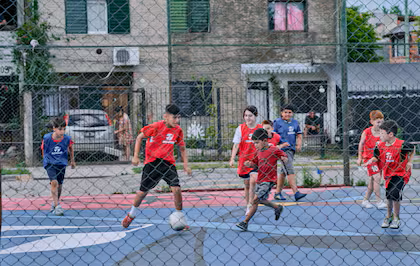
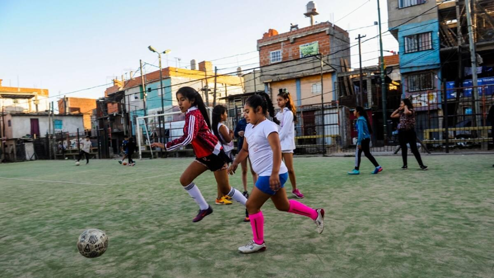

¿Qué hacemos?
Impulsamos iniciativas para combatir la corrupción y promover la transparencia dentro del fútbol argentino. Supervisamos la gestión de los recursos, fomentamos la rendición de cuentas y trabajamos para que las instituciones deportivas funcionen con mayor responsabilidad. Al mismo tiempo, brindamos apoyo económico, asesoramiento y herramientas de desarrollo a clubes emergentes, buscando fortalecer sus estructuras, mejorar sus instalaciones y ampliar sus oportunidades de crecimiento. Nuestro trabajo se centra en construir un fútbol más transparente, equitativo y sostenible, donde todos los clubes tengan la posibilidad de progresar sin importar su tamaño o categoría.

Cambiemos la
gestión
Cada registro a nuestra ONG, equivale a una firma. Gracias a cada una de esas firmas podemos justificar la necesidad de cambiar la gestión presidencial de la AFA, ya que ese número representaria la cantidad de personas que están disconformes con la gestión que la asociación ejerce sobre el fútbol Argentino.
Brindemos
oportunidades
Cada donación recibida será sumada y acumulada. Mensualmente nuestra ONG se encargará de contar lo recaudado, y así repartir una parte a cada club emergente, asociado a nuestra ONG. Esto lo hacemos con el objetivo de poder ayudar de alguna manera a sustentar a los clubes de barrio, y a su vez como forma de agradecimiento por confiar en nuestra ONG.

Brindemos
oportunidades
Creamos programas deportivos destinados al desarrollo de espacios para que niñas y jóvenes mujeres que les apacione el deporte, puedan empezar a practicarlo. Parte de lo recaudado se ahorrará y con ello se armaran pequeñas asociaciones gestionadas por nosotros, en las cuales niñas jóvenes y adultas pueden desarrollarse en el deporte.
